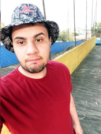

Minhas redes sociais
Quem sou eu?

Meu nome é Vitor, tenho 28 anos nascido no dia 22 de Setembro de 1993
atualmente cursando Analise e desenvolvimento de sistemas e gostando muito
moro na zona leste de São Paulo e sempre morei por aqui, o meu sonho
tambem é minha meta que é me tornar programador e desenvolvedor de sistemas
Onde me encontrar: